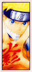

| » Naruto - the series ;
So what exactly is Naruto? It's currently one of the hottest, most popular series airing in Japan. It's ongoing both in the anime and the manga. New episodes and manga chapters are coming out every week, available on Bittorrent. The episodes are fansubbed, dubbed, and the manga chapters are scanlated as well as translated. I would provide the number of episodes and volumes of the manga, but the statistics would be wrong in a week. The manga is licensed in the USA by Viz, however they are far behind in the current volume. The anime has been licensed and currently runs regularly on the US's Cartoon Network. Naruto is about ninjas. Very, very cool ninjas. That's enough reason for anyone to watch. :P But to be serious, it's about a rookie ninja named Uzumaki Naruto, who was an orphan and a troublemaker in his hometown. He's been looked down upon by everyone from the day he was born, because he carried something that everyone deeply feared. However, that did not stop him from wanting to become a Hokage, the head ninja of a country - the Fire Country, to be exact. To become a Hokage however, one must go through many obstacles, including reaching several different ranks of ninjas first, finding and protecting your way of ninja, and learning many lessons. Throughout his journey, Naruto encounters many fellow ninjas, some like him, some different. Some become his allies, some his rivals. Each one has a different fighting style, and we are constantly learning from their diverse personalities. Naruto has a lot to learn, and he's a long way from becoming Hokage, but with his determination and stamina, he just may become one, one day. « reverse |
PRELUDE GENERAL Naruto Terms Chakra LEE First Glance Personality Techniques Fighting Style Transition Weaknesses Analysis RIVALRY vs. Sasuke vs. Neji vs. Gaara vs. Sound vs. Kimimaro RELATIONS Maito Gai Teammates Sakura Naruto EXTRAS Symbolism Seiyuu Quotations References EDEN Reasons Images Wallpapers Fanworks Graphics EPILOGUE Updates Linkage Credits Joined Contact Guestbook |